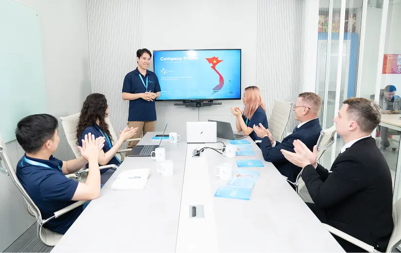
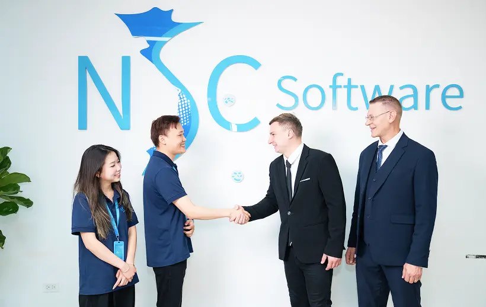
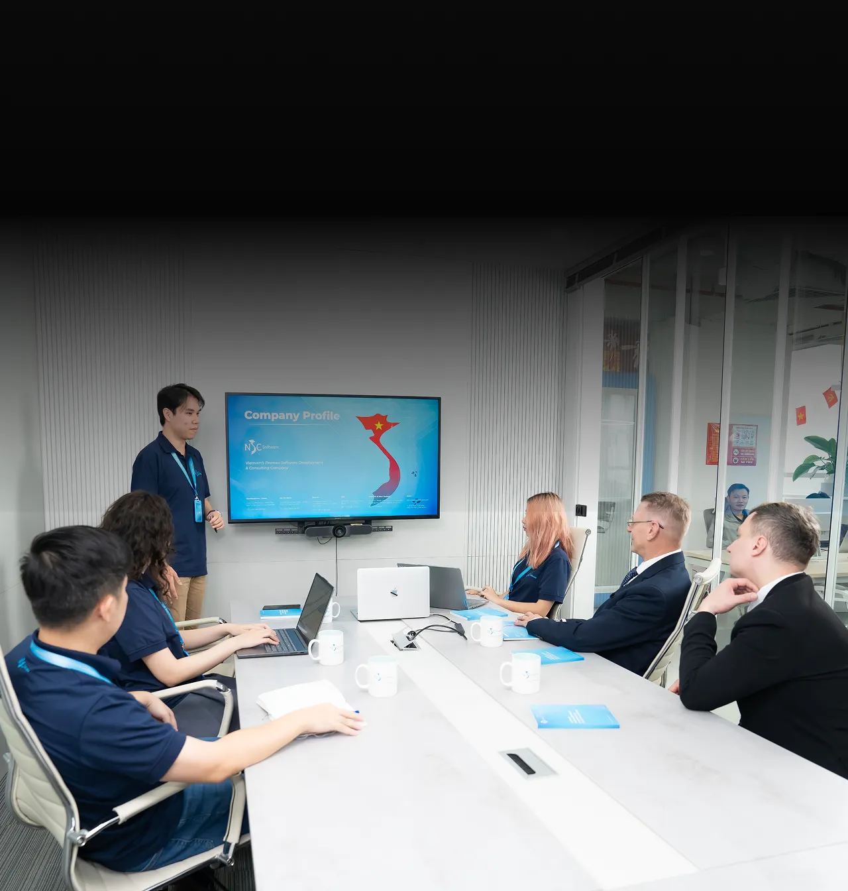
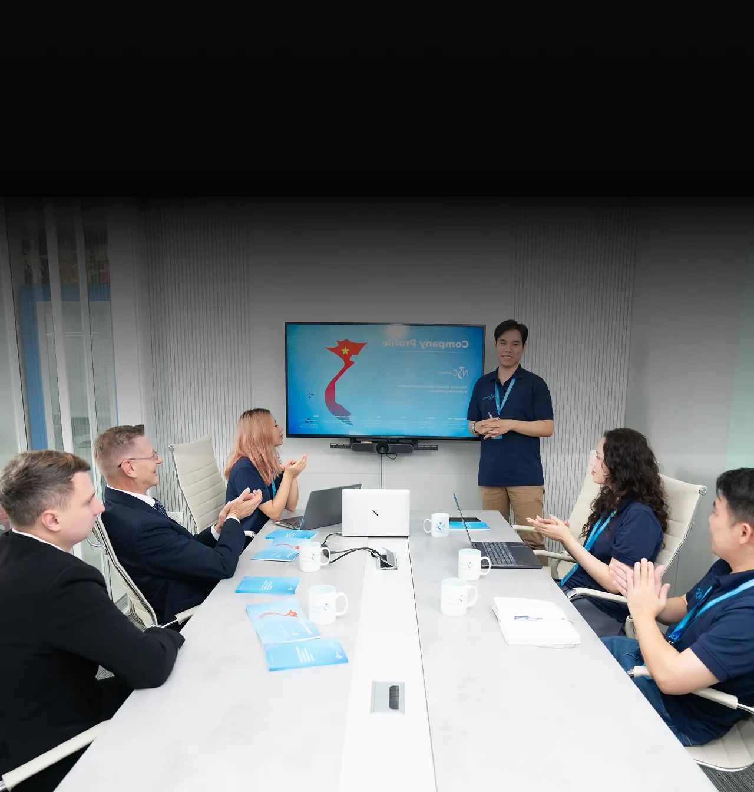

01.
TOP 7%
Vietnamese IT talent
Engineering Excellence Powered by Senior Talent
At NSC Software, we believe great software is built by experienced engineers, strong technical leadership, and efficient collaboration. By combining Vietnam's top technology talent with AI-enhanced development workflows, we help global companies build scalable, high-quality digital solutions.
Our mission is simple: deliver world-class engineering quality while enabling businesses to move faster, smarter, and more efficiently.
01.
TOP 7%
Vietnamese IT talent
02.
100%
Senior-level engineers
03.
6+ years
of industry experience
04.
AI-enhanced
Development workflows
05.
Global
English Collaboration
06.
Time-zone
EU, AU & US Alignment
Founded in Vietnam with a global vision, NSC Software provides high-quality software development and technology consulting for companies worldwide.

Our team consists of experienced engineers, solution architects, and technology specialists who work together to design and deliver modern digital products.
With a culture focused on discipline, collaboration, and continuous improvement, we approach every project with both technical rigor and business understanding.


Through strong engineering leadership and global delivery standards, NSC Software helps organizations build reliable, scalable, and future-ready technology solutions.
Every project at NSC is led by experienced senior engineers who take ownership of architecture, design decisions, and delivery quality.
To improve efficiency and development speed, our engineers leverage AI-assisted development tools for coding support, testing automation, and knowledge acceleration.
The result is a modern development process where human expertise and AI efficiency work together to deliver faster and better outcomes.

Vietnam is one of the fastest-growing technology talent markets in Asia. NSC carefully selects engineers from the top tier of Vietnam’s IT workforce, ensuring strong technical foundations and analytical problem-solving skills.
Our hiring process evaluates candidates through:
This ensures our clients work with engineers who can think critically, solve complex challenges, and deliver reliable solutions.

Unlike traditional outsourcing models that rely heavily on junior developers, NSC focuses on senior-level engineering talent.
All engineers in our team have extensive professional experience and the ability to independently handle complex technical problems.
This allows us to deliver:
Every NSC engineer brings at least six years of real-world development experience across a wide range of technologies and industries.
This experience enables our teams to:
Our engineers understand not just how to write code, but how to build systems that perform reliably in real-world environments.

Clear is critical in international software projects. At NSC, our engineering teams are fully English-proficient, enabling smooth collaboration with global clients.
Our teams actively participate in:
This ensures alignment, transparency, and faster decision-making throughout the project lifecycle.
NSC Software operates in working hours that overlap with Europe, Australia, and North America, Asia enabling real-time communication with international clients.
This allows for:
Clients benefit from the flexibility of global teams while maintaining the responsiveness of a close collaboration.

One of the major advantages of working with NSC Software is the ability to access high-quality engineering talent at competitive development costs.
Vietnam’s technology ecosystem allows companies to scale development capacity without the high operational costs typically found in Western markets.
NSC combines:
This creates a model where companies receive premium engineering quality at a sustainable investment level.
At NSC Software, we believe that great technology solutions come from great people. Our culture encourages collaboration, continuous learning, and technical excellence.
Engineers at NSC
are empowered to take ownership,
explore new technologies, and
continuously improve their skills
while working on challenging
global projects.

Whether you're a startup building a new product or an enterprise scaling
your technology platform, NSC Software provides the engineering expertise
needed to bring your ideas to life.